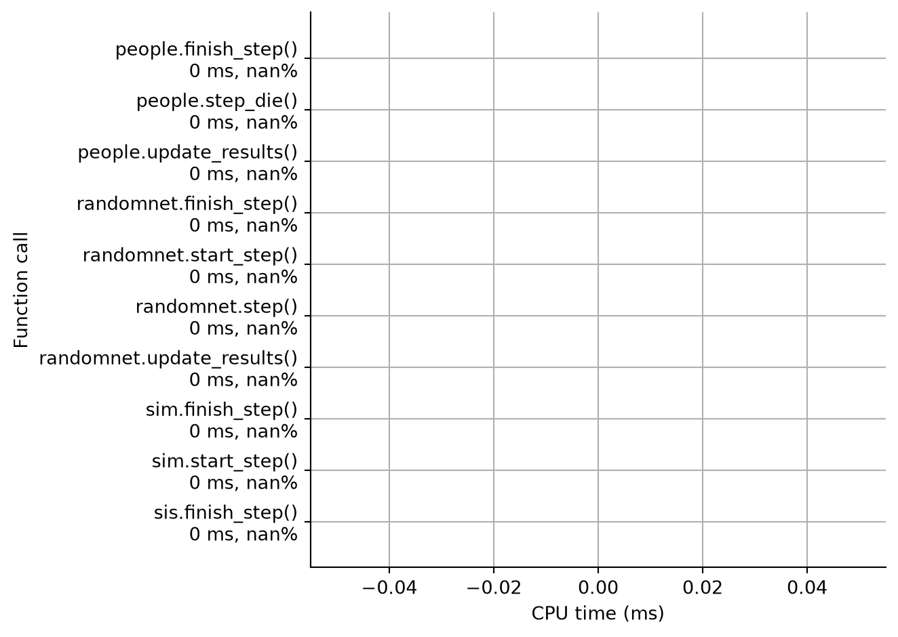

import sciris as sc
import starsim as ss
ss.options(jupyter=True)
sc.options(jupyter=True)
pars = dict(
start = '2000-01-01',
stop = '2020-01-01',
diseases = 'sis',
networks = 'random'
)
# Profile sim
sim = ss.Sim(pars)
prof = sim.profile()Initializing sim with 10000 agents Profiling 15 function(s): <bound method Sim.run of Sim(n=10000; 2000.01.01—2020.01.01; networks=randomnet; diseases=sis)> <bound method Sim.start_step of Sim(n=10000; 2000.01.01—2020.01.01; networks=randomnet; diseases=sis [...] <function Module.start_step at 0x7fb5886db600> <function Module.start_step at 0x7fb5886db600> <bound method SIS.step_state of sis(pars=[init_prev, beta, dur_inf, waning, imm_boost]; states=[susc [...] <bound method DynamicNetwork.step of randomnet(n_edges=50000; pars=[n_contacts, dur, beta]; states=[ [...] <bound method Infection.step of sis(pars=[init_prev, beta, dur_inf, waning, imm_boost]; states=[susc [...] <bound method People.step_die of People(n=10000; age=30.2±17.4)> <bound method People.update_results of People(n=10000; age=30.2±17.4)> <bound method Network.update_results of randomnet(n_edges=50000; pars=[n_contacts, dur, beta]; state [...] <function SIS.update_results at 0x7fb5880e4d60> <function Module.finish_step at 0x7fb5886db7e0> <function Module.finish_step at 0x7fb5886db7e0> <bound method People.finish_step of People(n=10000; age=30.2±17.4)> <bound method Sim.finish_step of Sim(n=10000; 2000.01.01—2020.01.01; networks=randomnet; diseases=si [...] Running 2000.01.01 ( 0/21) (0.00 s) ———————————————————— 5% Running 2010.01.01 (10/21) (0.13 s) ••••••••••—————————— 52% Running 2020.01.01 (20/21) (0.20 s) •••••••••••••••••••• 100% Elapsed time: 0.212 s ————————————————————————————————————————————————————————————————————— Profile of networks.Network.update_results: 0.000573282 s (0.270102%) ————————————————————————————————————————————————————————————————————— Total time: 0.000573282 s File: /home/runner/work/starsim/starsim/starsim/networks.py Function: Network.update_results at line 278 Line # Hits Time Per Hit % Time Line Contents ============================================================== 278 def update_results(self): 279 """ Store the number of edges in the network """ 280 21 166797.0 7942.7 29.1 super().update_results() 281 21 397934.0 18949.2 69.4 self.results['n_edges'][self.ti] = len(self) 282 21 8551.0 407.2 1.5 return —————————————————————————————————————————————————————————————— Profile of people.People.finish_step: 0.00128336 s (0.604656%) —————————————————————————————————————————————————————————————— Total time: 0.00128336 s File: /home/runner/work/starsim/starsim/starsim/people.py Function: People.finish_step at line 524 Line # Hits Time Per Hit % Time Line Contents ============================================================== 524 def finish_step(self): 525 """ Remove dead agents and run post-step updates """ 526 21 980554.0 46693.0 76.4 self.remove_dead() 527 21 294594.0 14028.3 23.0 self.update_post() 528 21 8214.0 391.1 0.6 return —————————————————————————————————————————————————————————— Profile of people.People.step_die: 0.00256743 s (1.20965%) —————————————————————————————————————————————————————————— Total time: 0.00256743 s File: /home/runner/work/starsim/starsim/starsim/people.py Function: People.step_die at line 484 Line # Hits Time Per Hit % Time Line Contents ============================================================== 484 def step_die(self): 485 """ Carry out any deaths or removals that took place this timestep """ 486 21 2239507.0 106643.2 87.2 death_uids = ((self.ti_dead <= self.sim.ti) | (self.ti_removed <= self.sim.ti)).uids 487 21 92795.0 4418.8 3.6 self.alive[death_uids] = False # Whilst not dead, removed agents should not be included in alive totals 488 489 # Execute deaths that took place this timestep (i.e., changing the `alive` state of the agents). This is executed 490 # before analyzers have run so that analyzers are able to inspect and record outcomes for agents that died this timestep 491 42 167228.0 3981.6 6.5 for disease in self.sim.diseases(): 492 21 21716.0 1034.1 0.8 if isinstance(disease, ss.Disease): 493 21 37362.0 1779.1 1.5 disease.step_die(death_uids) 494 495 21 8821.0 420.0 0.3 return death_uids —————————————————————————————————————————————————————————————— Profile of diseases.SIS.update_results: 0.00288507 s (1.3593%) —————————————————————————————————————————————————————————————— Total time: 0.00288507 s File: /home/runner/work/starsim/starsim/starsim/diseases.py Function: SIS.update_results at line 907 Line # Hits Time Per Hit % Time Line Contents ============================================================== 907 @ss.required() 908 def update_results(self): 909 """ Store the population immunity (susceptibility) """ 910 21 1943290.0 92537.6 67.4 super().update_results() 911 21 933006.0 44428.9 32.3 self.results['rel_sus'][self.ti] = self.rel_sus.mean() 912 21 8774.0 417.8 0.3 return ———————————————————————————————————————————————————————————————— Profile of people.People.update_results: 0.00413862 s (1.94991%) ———————————————————————————————————————————————————————————————— Total time: 0.00413862 s File: /home/runner/work/starsim/starsim/starsim/people.py Function: People.update_results at line 513 Line # Hits Time Per Hit % Time Line Contents ============================================================== 513 def update_results(self): 514 """ Record per-timestep population counts into the simulation results """ 515 21 31387.0 1494.6 0.8 ti = self.sim.ti 516 21 11807.0 562.2 0.3 res = self.sim.results 517 63 569288.0 9036.3 13.8 for state in self.auto_state_list: # Count each auto-generated BoolState result, e.g. n_alive, n_female 518 42 967366.0 23032.5 23.4 res[f'n_{state.name}'][ti] = np.count_nonzero(getattr(self, state.name)) 519 21 964833.0 45944.4 23.3 res.new_deaths[ti] = np.count_nonzero(self.ti_dead == ti) 520 21 847890.0 40375.7 20.5 res.new_emigrants[ti] = np.count_nonzero(self.ti_removed == ti) 521 21 736694.0 35080.7 17.8 res.cum_deaths[ti] = res.new_deaths[ti] if ti == 0 else res.cum_deaths[ti-1] + res.new_deaths[ti] 522 21 9352.0 445.3 0.2 return —————————————————————————————————————————————————————— Profile of sim.Sim.start_step: 0.00567966 s (2.67598%) —————————————————————————————————————————————————————— Total time: 0.00567966 s File: /home/runner/work/starsim/starsim/starsim/sim.py Function: Sim.start_step at line 451 Line # Hits Time Per Hit % Time Line Contents ============================================================== 451 def start_step(self): 452 """ Start the step -- only print progress; all actual changes happen in the modules """ 453 454 # Set the time and if we have reached the end of the simulation, then do nothing 455 21 11727.0 558.4 0.2 if self.complete: 456 errormsg = 'Simulation already complete (call sim.init() to re-run)' 457 raise AlreadyRunError(errormsg) 458 459 # Print out progress if needed 460 21 3885544.0 185025.9 68.4 self.elapsed = self.timer.toc(output=True) 461 21 13500.0 642.9 0.2 if self.verbose: # Print progress 462 21 9694.0 461.6 0.2 t = self.t 463 21 303418.0 14448.5 5.3 simlabel = f'"{self.label}": ' if self.label else '' 464 21 949871.0 45232.0 16.7 string = f' Running {simlabel}{t.now("str")} ({t.ti:2.0f}/{t.npts}) ({self.elapsed:0.2f} s) ' 465 21 17255.0 821.7 0.3 if self.verbose >= 1: 466 sc.heading(string) 467 21 12406.0 590.8 0.2 elif self.verbose > 0: 468 21 46177.0 2198.9 0.8 if not (t.ti % int(1.0 / self.verbose)): 469 3 419558.0 139852.7 7.4 sc.progressbar(t.ti + 1, t.npts, label=string, length=20, newline=True) 470 21 10508.0 500.4 0.2 return ———————————————————————————————————————————————————————————— Profile of modules.Module.start_step: 0.0129721 s (6.11182%) ———————————————————————————————————————————————————————————— Total time: 0.0129721 s File: /home/runner/work/starsim/starsim/starsim/modules.py Function: Module.start_step at line 828 Line # Hits Time Per Hit % Time Line Contents ============================================================== 828 @required() 829 def start_step(self): 830 """ Tasks to perform at the beginning of the step """ 831 42 33245.0 791.5 0.3 if self.finalized: 832 errormsg = f'The module {self._debug_name} has already been run. Did you mean to copy it before running it?' 833 raise RuntimeError(errormsg) 834 42 475167.0 11313.5 3.7 if self.dists is not None and ss.options.crn: # Will be None if no distributions are defined; jumping is a no-op under crn=False (see Dist.jump), so skip the per-dist loop entirely 835 42 12443804.0 296281.0 95.9 self.dists.jump_dt() # Advance random number generators forward for calls on this step 836 42 19893.0 473.6 0.2 return ————————————————————————————————————————————————————————— Profile of diseases.SIS.step_state: 0.016133 s (7.60108%) ————————————————————————————————————————————————————————— Total time: 0.016133 s File: /home/runner/work/starsim/starsim/starsim/diseases.py Function: SIS.step_state at line 868 Line # Hits Time Per Hit % Time Line Contents ============================================================== 868 def step_state(self): 869 """ Progress infectious -> recovered """ 870 21 1761406.0 83876.5 10.9 recovered = (self.infected & (self.ti_recovered <= self.ti)).uids 871 21 107448.0 5116.6 0.7 self.infected[recovered] = False 872 21 69903.0 3328.7 0.4 self.susceptible[recovered] = True 873 21 14184435.0 675449.3 87.9 self.update_immunity() 874 21 9789.0 466.1 0.1 return ——————————————————————————————————————————————————————————————— Profile of networks.DynamicNetwork.step: 0.0484659 s (22.8348%) ——————————————————————————————————————————————————————————————— Total time: 0.0484659 s File: /home/runner/work/starsim/starsim/starsim/networks.py Function: DynamicNetwork.step at line 437 Line # Hits Time Per Hit % Time Line Contents ============================================================== 437 def step(self): 438 """ Remove expired partnerships and add new ones """ 439 21 22623414.0 1.08e+06 46.7 self.end_pairs() 440 21 25831701.0 1.23e+06 53.3 self.add_pairs() 441 21 10825.0 515.5 0.0 return ——————————————————————————————————————————————————————— Profile of diseases.Infection.step: 0.113573 s (53.51%) ——————————————————————————————————————————————————————— Total time: 0.113573 s File: /home/runner/work/starsim/starsim/starsim/diseases.py Function: Infection.step at line 214 Line # Hits Time Per Hit % Time Line Contents ============================================================== 214 def step(self): 215 """ 216 Perform key infection updates, including infection and setting prognoses 217 """ 218 # Create new cases 219 21 87095342.0 4.15e+06 76.7 new_cases, sources, networks = self.infect() # TODO: store outputs in self or use objdict rather than 3 returns 220 221 # Set prognoses 222 21 15476.0 737.0 0.0 if len(new_cases): 223 21 26450653.0 1.26e+06 23.3 self.set_outcomes(new_cases, sources) 224 225 21 11466.0 546.0 0.0 return new_cases, sources, networks Figure(672x480)
/home/runner/work/starsim/starsim/starsim/loop.py:606: RuntimeWarning:
No CPU timing was recorded: run with sim.run(profile=True) (or loop.run(profile=True)) to populate cpu_time.
ss.warn('No CPU timing was recorded: run with sim.run(profile=True) (or loop.run(profile=True)) to populate cpu_time.')